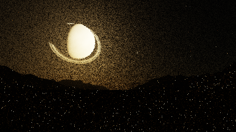
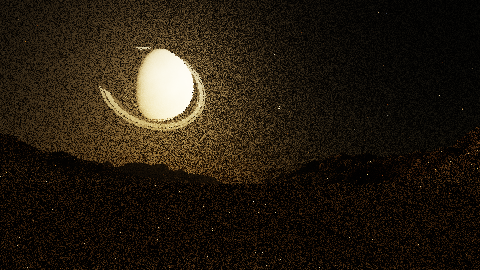
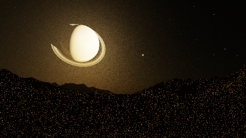
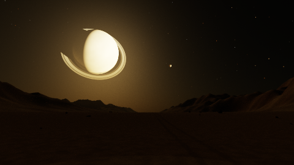
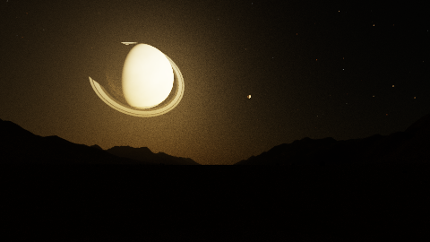

Left: current renderer. Right: guided ground bounces.
Both use the same exposure, resolution and number of samples. Guided sampling is now the app default; use --unguided-ground for the original sampler.
Measurements and limitations.




These remove real light paths solely to locate the noise source.
